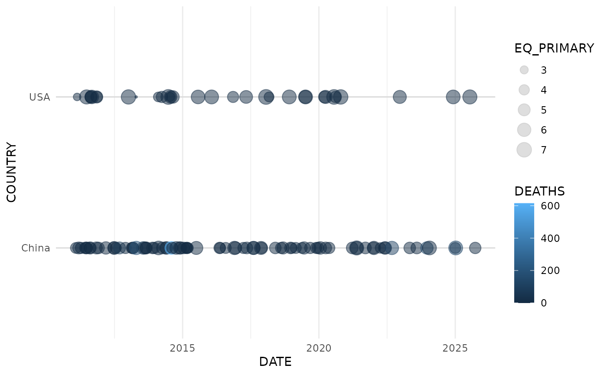
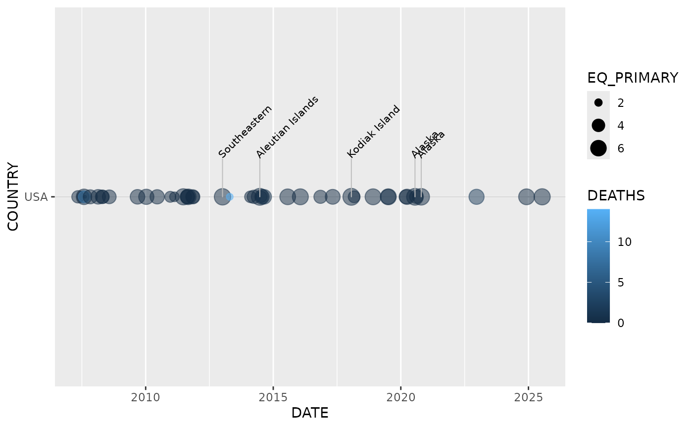

Introduction to noaaquakes
Donald Davis
2026-03-21
Source:vignettes/introduction.Rmd
introduction.Rmd
library(noaaquakes)
library(ggplot2)
library(dplyr)
#>
#> Attaching package: 'dplyr'
#> The following objects are masked from 'package:stats':
#>
#> filter, lag
#> The following objects are masked from 'package:base':
#>
#> intersect, setdiff, setequal, union
library(lubridate)
#>
#> Attaching package: 'lubridate'
#> The following objects are masked from 'package:base':
#>
#> date, intersect, setdiff, unionThe noaaquakes package is designed to help researchers and data scientists process and visualize the NOAA Significant Earthquake Database. It handles the cleaning of raw data and provides specialized tools for temporal and spatial visualization.
Data Processing
First, we load the raw data and clean it. In this example, we assume you have the NOAA dataset saved locally.
# Locate the data within the package installation
filename <- system.file("extdata", "earthquakes.tsv", package = "noaaquakes")
# Read and clean the data
# Note: eq_clean_data handles the date conversion and location cleaning
data <- readr::read_tsv(filename) %>%
eq_clean_data()
#> Rows: 6663 Columns: 39
#> ── Column specification ────────────────────────────────────────────────────────
#> Delimiter: "\t"
#> chr (2): Search Parameters, Location Name
#> dbl (37): Year, Mo, Dy, Hr, Mn, Sec, Tsu, Vol, Latitude, Longitude, Focal De...
#>
#> ℹ Use `spec()` to retrieve the full column specification for this data.
#> ℹ Specify the column types or set `show_col_types = FALSE` to quiet this message.
# Preview the cleaned data
head(data %>% select(DATE, COUNTRY, LOCATION_NAME, EQ_PRIMARY))
#> # A tibble: 6 × 4
#> DATE COUNTRY LOCATION_NAME EQ_PRIMARY
#> <date> <chr> <chr> <dbl>
#> 1 -2150-01-01 Jordan Bab-A-Daraa,Al-Karak 7.3
#> 2 -2000-01-01 Turkmenistan W 7.1
#> 3 -1250-01-01 Israel Ariha (Jericho) 6.5
#> 4 -1050-01-01 Jordan Timna Copper Mines 6.2
#> 5 -479-01-01 Greece Macedonia 7
#> 6 -426-06-01 Greece Euboea 7.1Visualizing Timelines with geom_timeline
The geom_timeline() function allows you to plot earthquakes along a horizontal time axis. You can compare different countries by mapping them to the y aesthetic.
# Example: Visualizing major earthquakes in China and USA since 2010
data %>%
filter(COUNTRY %in% c("USA", "China"), Year > 2010) %>%
ggplot(aes(x = DATE,
y = COUNTRY,
size = EQ_PRIMARY,
color = DEATHS)) +
geom_timeline() +
theme_minimal()
Adding Labels
To identify specific events, use geom_timeline_label(). This adds a vertical line and a 45-degree rotated label for the top n_max earthquakes by magnitude.
data %>%
filter(COUNTRY == "USA", Year > 2005) %>%
ggplot(aes(x = DATE, y = COUNTRY, size = EQ_PRIMARY, color = DEATHS)) +
geom_timeline() +
geom_timeline_label(aes(label = LOCATION_NAME, magnitude = EQ_PRIMARY), n_max = 5)
Interactive Mapping
For spatial analysis, noaaquakes provides a wrapper around the leaflet package.
- eq_map(): Draws the map with circle markers where the radius corresponds to the earthquake’s magnitude.
- eq_create_label(): Generates high-quality HTML labels showing the Location, Magnitude, and Total Deaths for map pop-ups.